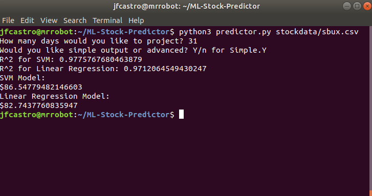
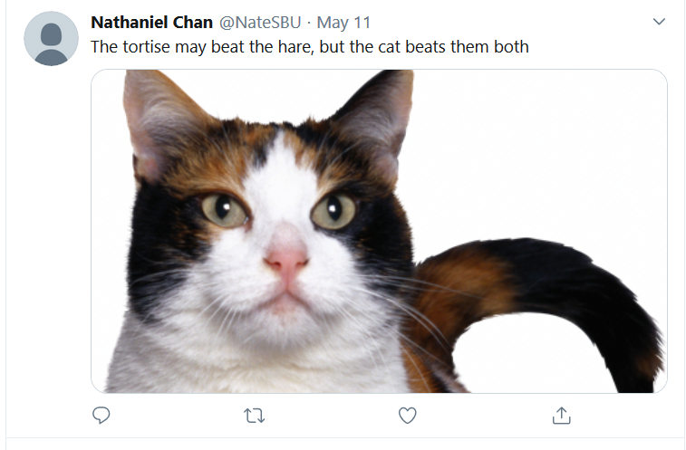

Hi, I'm James! I'm a recent Computer Science graduate from Stony Brook University. I'm currently
looking for job opportunities and learning new things within software development. I love learning new things,
and part of the beauty of CS is that there's always something new around the corner to learn. In particular, I loved
my courses in software security & offensive security, and hope to continue learning about new vulnerabilities and how
to prevent them. Outside of school I've taught myself a bit of Deep Learning - nothing fancy, just using tools
like SciKit Learn and the most elementary basics about neural networks. My long term goal is to be able to find work
where I am clearly posing some benefit to society. On top of that, I'd also like to be using my skills to
pursue personal programming goals - ie, creating a Wall-E robot using OpenCV & PyTorch/TF for recognizing images
of trash. Outside of programming, I'm particularly passionate about lifting weights, playing guitar, experimental & scifi movies,
the Mets, and gardening. I find it's good to learn many unrelated things, as they often teach life lessons that are
applicable to every other facet of life. For more of my thoughts on these many unrelated topics, see my blog
here.
Currently Learning: Cloud Computing
Currently Reading: Tools of Titans by Tim Ferriss
Currently Watching: Avatar the Last Airbender
Below are some of the projects I've had the pleasure of working on - some in school, some on my own time.

An ecommerce platform used with a SQL database that is
queried appropriately based upon user action
Technologies Used: Java, MySQL

A distributed typosquatting detector webapp that enables users to
see if a website is sitting on a permutation of a given site's URL.
Technologies Used: Python with Django, HTML, CSS, JavaScript

Basic Machine learning projects such as stock and bitcoin prediction, MLB pitch selection, etc -
created with SciKit Learn.

A Full Stack Webapp created in a team of four that enables users to record college application history,
as well as find out information about schools, obtain chances of admission and connect with other students applying as well.
Technologies Used: JavaScript via MySQL, Express.js, React.js and Node.js.
Additional libraries used include bcrypt, joi and axios.

A fun proof of concept Command & Control program that utilizes twitter's API to hide messages in images of cats
between victims/clients and the attacker/server for commands and data exfiltration. Features include potential adaptation
to network traffic to create inconspicuous traffic logs.
Technologies Used: Python with Scapy
Let's Chat.
Want to work together on a project? Need a programmer? Send me an email at jamescastro98(At)gmail.com,
and check out my resume here.